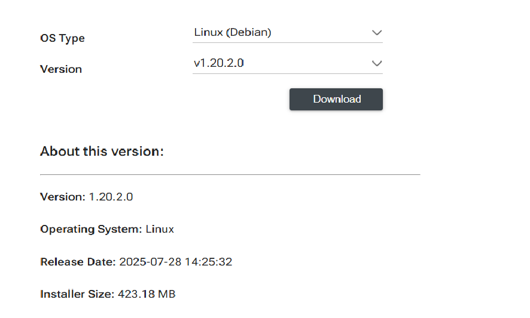

Cloud AI SDK¶
SDK Installation¶
The Platform and Apps SDKs are targeted for Linux-based platforms. The SDKs can be installed natively on Linux operating systems. Containers and orchestration are also supported through Docker and Kubernetes. Virtual machines, including KVM, ESXi, and Hyper-V, are also supported. This section covers:
Installation of the SDKs across multiple Linux distributions
Building a Docker image with the SDKs and third-party packages for a seamless execution of QAic inference tools/workflow
Setting up KVM, ESXi, and Hyper-V, and installation of SDKs
Compilation and Execution modes¶
Apps and Platform SDKs enable just-in-time (JIT) or ahead-of-time (AOT) compilation and execution on x86-64 and AArch64 platforms.
In JIT mode, compilation and execution are tightly coupled and require Apps and Platform SDKs to be installed on the same system/VM.
In AOT mode, compilation and execution are decoupled. Networks can be compiled ahead-of-time and the compiled networks can be deployed on x86-64 or AArch64 with Platform SDK.
Both JIT and AOT are supported when Apps and Platform SDK are installed on the same server/VM.
Hardware Requirements¶
CPU - Server grade x86 or ARM multi-core CPU
RAM - minimum 512GB (recommend 768GB or higher)
Required for the compilation of large models and corresponding configurations like batch size, context length etc.
Storage - minimum 1TB (recommend 4TB)
Large storage is recommended to store multiple models (and associated artifacts), serialized engines etc.
Supported Operating Systems, Hypervisors, and Platforms¶
The Cloud AI Platform SDK is compatible with the following operating systems (OS) and platforms.
Operating Systems¶
Operating systems |
Kernel |
|---|---|
Ubuntu 22.04 |
Default Kernel (GA or HWE) |
Ubuntu 24.04 |
Default Kernel (GA or HWE) |
Red Hat Enterprise Linux 8.10 |
Default Kernel |
Red Hat Enterprise Linux 9.6 |
Default Kernel |
Red Hat Enterprise Linux 10 |
Default Kernel |
Amazon Linux 2 |
Amazon 5.10 Kernel |
Amazon Linux 2023 |
Default Kernel |
|
|
|
|
|
Hypervisors¶
Cloud AI only supports PCIe passthrough to a virtual machine. This means that the virtual machine completely owns the Cloud AI device. A single Cloud AI device cannot be shared between virtual machines or between a virtual machine and the native host.
Hypervisor |
x86-64 |
AArch64 |
|---|---|---|
KVM |
✔ |
✗ |
Hyper-V |
✔ |
✗ |
ESXi |
✔ |
✗ |
Xen |
✔ |
✗ |
|
||
SDK Download Instructions¶
Version 1.12 onwards, Platform and Apps SDK can only be downloaded from Qualcomm Package Manager.
login to Qualcomm Package Manager. First time users need to register for a Qualcomm ID.
Click on Tools
- In the Filter pane on the left, check Linux and uncheck Windows.In the search box, type Cloud AI.Click on Qualcomm® Cloud AI Products to reveal the SDKs available.
- For Platform SDK, click Qualcomm® Cloud AI Platform SDK.For Apps SDK, click Qualcomm® Cloud AI Apps SDK.
Two drop down lists are present, one for the OS and one for the version of the SDK. Select Linux (Debian) and SDK Version from the drop down lists.
{kind=link}

Click the Download button to download the SDK.
Platform SDK¶
- The downloaded Platform SDK file is named aic_platform.Core.<majorversion.minorversion.patchversion.buildversion>.Linux-AnyCPU.zip.For example: aic_platform.Core.1.20.2.0.Linux-AnyCPU.zip.
On the host machine, log in as root or use
sudoto have the right permissions to complete installationCopy the Platform SDK downloaded from the Qualcomm Portal to the host machine
Log in to the host machine (ssh or local terminal)
Unzip the downloaded zip file to a working directory
cdto the working directory
Info
The Platform SDK contains collaterals for x86-rpm, x86-deb, aarch64-rpm and aarch64-deb. Confirm the architecture and linux package format that works for your setup.
The Platform SDK (qaic-platform-sdk-<major.minor.patch.build>) is
composed of the following tree structure.
├── aarch64
│ ├── deb
│ │ ├── deb
│ │ ├── deb-docker
│ │ ├── deb-perf
│ │ └── Workload
│ ├── rpm
│ │ ├── rpm
│ │ ├── rpm-docker
│ │ ├── rpm-perf
│ │ └── Workload
│ └── test_suite
│ ├── pcietool
│ └── powerstress
├── common
│ ├── qaic-test-data
│ └── sectools
└── x86_64
├── deb
│ ├── deb
│ ├── deb-docker
│ └── Workload
├── rpm
│ ├── rpm
│ ├── rpm-docker
│ └── Workload
└── test_suite
├── pcietool
└── powerstress
Uninstall existing Platform SDK
cd <architecture>/<deb/rpm>
sudo ./uninstall.sh
sync
Run the install.sh script as root or with sudo to install with superuser permissions. Installation may take up to 30 mins depending on the number of Cloud AI cards in the server/VM. Cloud AI cards undergo resets several times during the installation.
Upgrading to SDK 1.20 is a 2-step process:
In the first step we need to prepare each SoC to accept the 1.20 SBL bootloader firmware
In the second step we upgrade to the 1.20 SBL bootloader firmware
For Hybrid boot cards (PCIe CEM form factor cards), run:
cd <architecture>/<deb/rpm>
sudo ./install.sh --no_auto_upgrade_sbl # For VM on ESXi hypervisor, also add the --datapath_polling option
sudo ./install.sh --ecc enable
# Allow server to initialize all devices
sleep 10
# List QIDs in the system
sudo /opt/qti-aic/tools/qaic-util -q | grep -e QID
# Update SoC, repeat for all QIDs in the system.
sudo /opt/qti-aic/tools/qaic-firmware-updater -d <QID> -f
# Reset cards.
sudo /opt/qti-aic/tools/qaic-util -s
To check qmonitor service is active or inactive - use the below command
sudo systemctl is-active qmonitor-proxy
In case you need to stop and start Qmonitor server, please use below commands.
sudo /opt/qti-aic/scripts/qaic-monitor-service.sh stop
sudo /opt/qti-aic/scripts/qaic-monitor-service.sh start
For Flashless boot cards (less common), run:
sudo ./install.sh --ecc enable
# For VM on ESXi hypervisor, run
sudo ./install.sh --datapath_polling --ecc enable
To enable mdp, disable acs, increase the mmap limit & ulimit value, use
--setup_mdp all option.
sudo ./install.sh --setup_mdp all
On successful installation of the platform SDK, the contents shown below are stored in /opt/qti-aic:
config dev examples exec firmware lib services test-data tools versions
Check Platform SDK version using
sudo /opt/qti-aic/tools/qaic-version-util --platform
Add user to the qaic group to allow command-line tools to run without sudo:
sudo usermod -a -G qaic $USER
Verify card operation¶
Refer to Verify Card Operation
Apps SDK¶
The downloaded Apps SDK file is named aic_apps.Core.<majorversion.minorversion.patchversion.buildversion>.Linux-AnyCPU.zip. For example: aic_apps.Core.1.20.2.0.Linux-AnyCPU.zip.
Copy the SDK over to the linux host machine.
unzip the downloaded file.
Info
The Apps SDK contains collaterals for AArch64 and x86-64. Confirm the architecture and linux package format that works for your setup.
The Apps SDK (qaic-apps-
<major.minor.patch.build version>) is composed of the following tree structure.
├── aarch64
│ ├── deb
│ │ ├── dev
│ │ │ ├── hexagon_tools
│ │ │ └── lib
│ │ ├── exec
│ │ | ├── qaic-exec
│ │ | └── qaic-opstats
│ │ ├── qaic-encrypt
│ │ | ├── qaic_verify_attestation
│ │ | └── qwes_certs
│ │ ├── scripts
│ │ | └── qaic-model-configurator
│ │ ├── tools
│ │ | ├── custom-ops
│ │ | └── smart-nms
│ │ └── versions
├── common
│ ├── dev
│ | ├── inc
│ | ├── lib
│ | └── python
│ ├── examples
│ | ├── apps
│ | └── scripts
│ ├── integrations
│ | ├── kserve
│ | ├── qaic_onnxrt
│ | ├── tgi
│ | ├── triton
│ | └── vllm
│ ├── scripts
│ | └── qaic-prepare-model
│ ├── tools
│ | ├── aic-manager
│ | ├── docker-build
│ | ├── graph-analysis-engine
│ | ├── k8s-device-plugin
│ | ├── opstats-profiling
│ | ├── package-generator
│ | ├── qaic-inference-optimizer
│ | ├── qaic-pytools
│ | ├── rcnn-exporter
│ | └── qaic-version-util
├── x86_64
│ ├── deb
│ | ├── dev
│ | ├── exec
│ | ├── qaic-encrypt
│ | ├── scripts
│ | ├── tools
│ | └── versions
│ ├── rpm
│ | ├── dev
│ | ├── exec
│ | ├── qaic-encrypt
│ | ├── scripts
│ | ├── tools
│ | └── versions
Install Apps SDK¶
Uninstall existing Apps SDK¶
sudo ./uninstall.sh
Run install script¶
Run the install.sh script as root or with sudo to install with root permissions. If qaic-pytools are required then skip this and continue with next step.
sudo ./install.sh
To enable qaic-pytools as part of Apps SDK instalation.
- qaic-pytools is supported with python3.10
- Install the required packages,
Debian-based Systems:cmake version:- cmake (cmake 3.25 or above is needd)
Build-essentials (which ensures g++ and make installation)sudo apt install build-essentials -y sudo apt install cmake -y python3.10-dev and python3-devRPM-based Systems:cmake version:- cmake (cmake 3.25 or above is needed).
Development tools (installable via the @development-tools group) to ensure g++ and make installation.sudo <package manager> groupinstall "Development Tools" -y sudo <package manager> cmake -y python3.10-devel and python3-develNote:
On AL2 default cmake version is 2.8 which is very old and not compatible to install qaic-pytools, please ensure to install cmake <= 3.25, post installation , please ensure that this is set as default cmake.
- Run the install.sh script with
--enable-qaic-pytoolsflag
sudo ./install.sh --enable-qaic-pytools
Verify installation¶
On successful installation of the Apps SDK, the contents are stored to the /opt/qti-aic path under the dev and exec directories:
dev exec integrations scriptsCheck the Apps SDK version¶
Check the Apps SDK version with the following command
cat /opt/qti-aic/versions/apps.xml
Apply chmod commands¶
sudo chmod a+x /opt/qti-aic/dev/hexagon_tools/bin/*
sudo chmod a+x /opt/qti-aic/exec/*